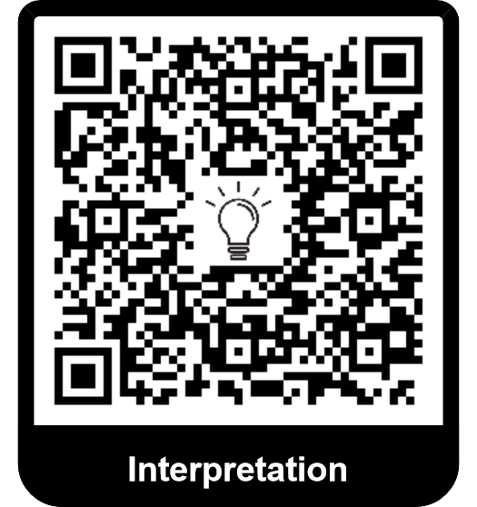

6.1.2.5. Théorèmes en mécanique du solide#
Les démonstrations de plusieurs théorèmes sont en ligne.
6.1.2.5.1. Théorème de la résultante cinétique#
Le but est de voir comment on peut appliquer le principe fondamental de la dynamique à un système de points matériel. On peut l’énoncer de manière identique mais comme on va le voir, on peut “simplifier” légèrement son énoncé.
Forces extérieures et intérieures On rappelle que pour un système de points matériels (solide déformable ou indéformable), on distingue les forces intérieures exercées par une partie du système sur une autre partie du système et les forces extérieures exercées par le milieu extérieur sur le système.
Important
Théorème de la résultante dynamique
La dérivée temporelle de la quantité de mouvement total d’un système de points matériel dans un référentiel galiléen est égale à la somme des forces extérieures qui s’appliquent sur le solide.
6.1.2.5.2. Théorème du moment cinétique: Application au solide.#
Important
TMC appliqué à un solide.
La dérivée temporelle du moment cinétique d’un système de points matériel par rapport à un point/un axe fixe dans un référentel \(\mathfrak{R}\) est égal à la somme du moment des actions extérieures calculé au point point/axe.
6.1.2.5.3. Energétique#
6.1.2.5.3.1. Travail d’une action globale#
Important
Travail et puissance d’une action globale
Le travail (élémentaire ou fini) d’une action globale est la somme des travaux (élémentaires ou fini) de chaque action ponctuelle.
La puissance transmise par une action globale dans un référentiel donné est la somme des puissances transmises par chaque action ponctuelle dans le même référentiel.
6.1.2.5.3.1.1. Cas particuliers.#
Important
Cas d’un solide en translation (à connaître)
Dans le cas d’un solide indéformable en translation, la puissance transmise par une action globale peut se réécrire comme \(P_{\mathfrak{R}} = \overrightarrow{F} \cdot \overrightarrow{v_{M/\mathfrak{R}}}\) avec M un point quelconque du solide (on prend en général le centre d’inertie mais de toute façon, tous les points ont la même vitesse puisque le solide est en translation) et \(\overrightarrow{F}\) la force résultante de l’action globale.
Le travail élémentaire s’écrit \(\delta W = \overrightarrow{F} \cdot \overrightarrow{dOM}\) avec M un point quelconque du solide.
Important
Cas d’un solide en rotation autour d’un axe fixe (à connaître)
Dans le cas d’un solide indéformable en rotation autour d’un axe \(\Delta\) fixe dans un référentiel \(\mathfrak{R}\), la puissance transmise par une action globale peut se réécrire comme \(P_{\mathfrak{R}} = M_\Delta \omega_\Delta\) avec \(\omega_\Delta\) la vitesse angulaire de rotation du solide autour de l’axe \(\Delta\) (c’est une grandeur algébrique) et \(M_\Delta\) le moment résultant de l’action globale sur l’axe \(\Delta\).
Le travail élémentaire s’écrit \(\delta W = M_\Delta d\theta_\Delta\) avec \(d\theta_\Delta\) une variation infinitésimale de l’angle \(\theta_\Delta\) orienté suivant \(\Delta\) et représentant la rotation du solide autour de l’axe.
6.1.2.5.3.1.2. Forces conservatives#
Il existe des forces globales conservatives. Le travail global peut alors être écrit comme l’opposé d’une fonction (énergie potentielle) ne dépendant que de la position du solide.
6.1.2.5.3.1.3. Cas usuels#
Important
Cas d’une liaison parfaite.
Si la liaison pivot est parfaite, alors la puissance (et le travail) transmis par la liaison pivot dans le référentiel du stator est nulle. La preuve est triviale.
Important
Action de la pesanteur
L’action de la pesanteur dérive d’une énergie potentielle. Si le champ de pesanteur est uniforme : \(E_p = mg z_G\) où \(z_G\) est l’altitude du centre d’inertie G.
Important
Action d’un fil de torsion L’action d’un fil de torsion de constante de torsion \(C\) dérive d’une énergie potentielle dont l’expression est:
où \(\theta - \theta_0\) est l’angle de torsion du fil.
6.1.2.5.3.2. Théorèmes énergétiques#
Important
Théorème de l’énergie cinétique/mécanique. Cas général.
La variation d’énergie cinétique d’un système de points d’un état A à un état B est égale au travail des forces qui s’appliquent sur le système sur le même chemin, qu’elles soient extérieures ou intérieures.
La variation d’énergie mécanique d’un système de points d’un état A à un état B est égale au travail des forces non conservatives qui s’appliquent sur le système sur le même chemin, qu’elles soient extérieures ou intérieures.
Important
Théorème de l’énergie cinétique/mécanique. Cas d’un solide indéformable.
Dans le cas d’un solide indéformable, le travail des forces intérieures est nul.
Démonstration
Nous allons démontrer que dans le cas général le travail des forces intérieures est a priori non nul et qu’il s’annule dans le cas d’un solide indéformable.
Considérons deux points \(M_1\) et \(M_2\) du solide en interaction. On note \(\overrightarrow{f_{1 \rightarrow 2}}\) la force exercée par \(M_1\) sur \(M_2\) et \(\overrightarrow{f_{2 \rightarrow 1}}\) la force exercée par \(M_2\) sur \(M_1\). On a (troisième loi de Newton): \(\overrightarrow{f_{1 \rightarrow 2}} = -\overrightarrow{f_{2 \rightarrow 1}}\). La puissance totale associée à ces deux forces s’écrit:
\[\begin{align*} P &= \overrightarrow{f_{1 \rightarrow 2}} \cdot v_{M_2/R} + \overrightarrow{f_{2 \rightarrow 1}} \cdot v_{M_1/R}\\ &= \overrightarrow{f_{1 \rightarrow 2}} \cdot {(\frac{d \overrightarrow{M_1 M_2}}{dt})}_{R}\\ \overrightarrow{f_{1 \rightarrow 2}} &= f_{1 \rightarrow 2} \overrightarrow{u_{1 \rightarrow 2}}\\ \overrightarrow{M_1 M_2} &= M_1 M_2 \overrightarrow{u_{1 \rightarrow 2}}\\ {(\frac{d \overrightarrow{M_1 M_2}}{dt})}_{R} &= \frac{d M_1 M_2}{dt} \overrightarrow{u_{1 \rightarrow 2}} + M_1 M_2 {(\frac{d \overrightarrow{u_{1 \rightarrow 2}}}{dt})}_R \end{align*}\]où \(\overrightarrow{u_{1 \rightarrow 2}}\) est le vecteur unitaire allant de \(M_1\) vers \(M_2\).
Le première terme correspond à la variation de la distance entre les deux points, le second à la rotation d’un point par rapport à l’autre. La puissance des forces intérieurs pour ces deux points s’écrit donc: \(P = f_{1 \rightarrow 2} \frac{d M_1 M_2}{dt}\)
Si le mobile se déforme, cette expression est a priori non nulle.
Si le solide est indéformable, cette expression est toujours nulle.